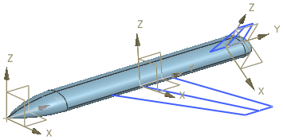
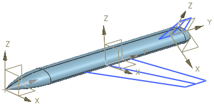

基准 CSYS 示例
基准 CSYS 示例
在产品装配中定义关键位置
对于航天飞行器，可以在绝对原点处创建基准 CSYS 以定义该飞行器的坐标系。可以创建其他基准 CSYS 以定义机翼的坐标系。然后，可以将该机翼坐标系用作参考，以在机翼装配结构中设计和放置部件。

在详细部件中创建特征
对于细节部件，可以使用基准 CSYS 来辅助定义特征的位置与方向。在没有方便使用的边和面时，或是您需要通过多个平移及角度参数控制特征的位置时，这非常有用。

对于航天飞行器，可以在绝对原点处创建基准 CSYS 以定义该飞行器的坐标系。可以创建其他基准 CSYS 以定义机翼的坐标系。然后，可以将该机翼坐标系用作参考，以在机翼装配结构中设计和放置部件。

对于细节部件，可以使用基准 CSYS 来辅助定义特征的位置与方向。在没有方便使用的边和面时，或是您需要通过多个平移及角度参数控制特征的位置时，这非常有用。